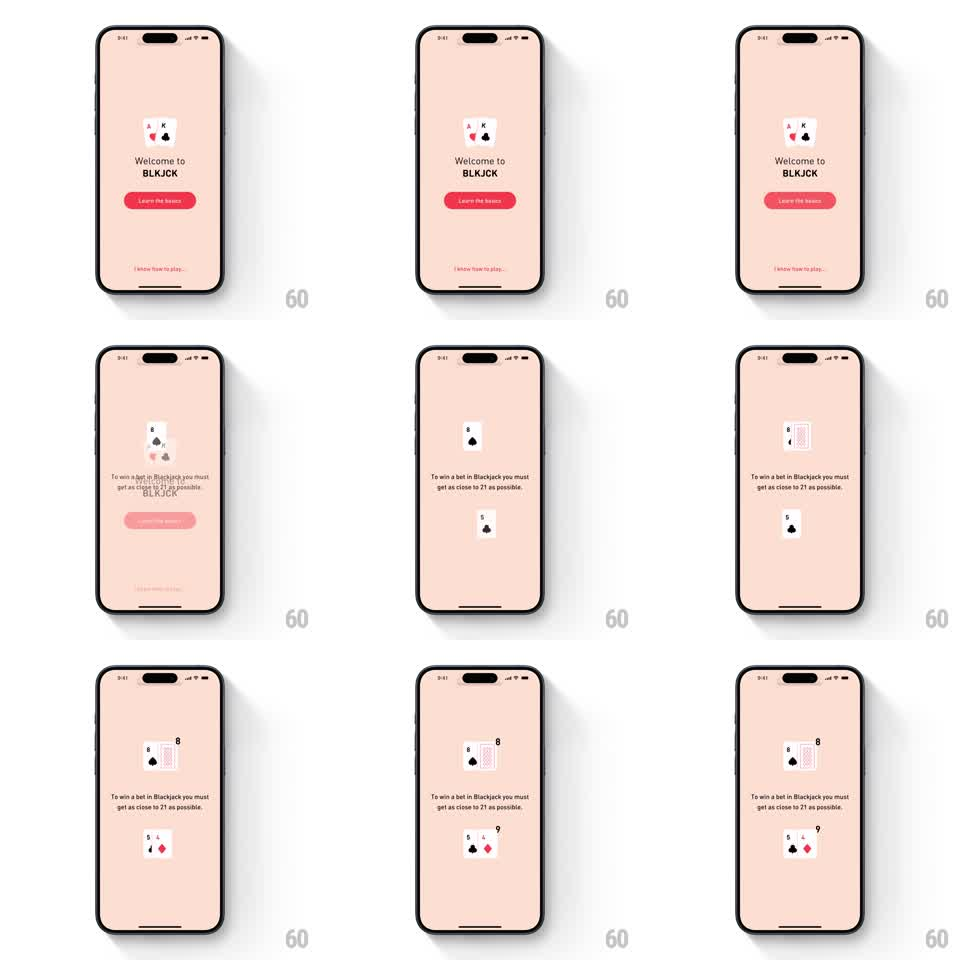

Media
Frame-by-frame

Rebuild this animation 1:1: BLKJCK's intro transition - the welcome text and button slide away while the logo's playing cards scatter and re-deal themselves into the table layout.

Rebuild this animation 1:1: BLKJCK's intro transition - the welcome text and button slide away while the logo's playing cards scatter and re-deal themselves into the table layout. ## Integration Integration: stack-agnostic spec - springs given as stiffness/damping, timed motions as duration + curve; map every value to your framework and animation library of choice. ## Scene Pink welcome screen: a stacked pair of cards (A and K) as the logo, "Welcome to BLKJCK", a Learn the basics button, and a skip link. The end state is the game table: dealer cards up top, player cards below, hint text between. ## Motion spec Pattern: re-dealing shared-element transition, ~900ms. - On advance, the welcome copy and button slide down and fade (250ms, ease-in). - The two logo cards split: each slides on a curved path to its new seat - one up to the dealer row, one down to the player row (spring stiffness 220 damping 19), rotating to match its final tilt. - As they travel, their faces flip to the new dealt cards (half-flip at the path's midpoint, 150ms). - The remaining cards slide in from the screen edges to complete both hands (300ms, 60ms stagger), and the hint text fades up last. ## Calibration - The logo cards are shared elements - the same two cards become part of the deal; spawning new cards at the seats breaks the trick. - The flip happens in flight, never at rest - a card that flips after landing reads as a content update. ## Reduced motion Welcome fades out; the table fades in fully dealt. ## Don't miss - Card shadows track the travel so the cards read as physical objects, not sliding images. - The dealer seat card and player seat card are fixed roles - the A goes up, the K comes down, matching the source layout.